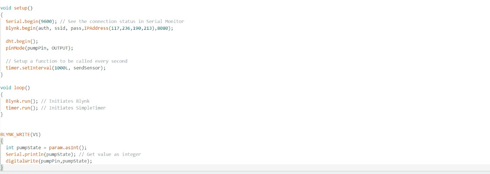

INTRODUCTION
Modern technology-driven development has emerged in the timeless art of gardening innovations and the transformative potential of the Internet of Things (IoT). the hustle and bustle of modern life meets the ancient practice of plant care - intelligent device monitoring system carefully designed to integrate device functions IoT and the core of horticulture. green areas At its heart is the complex integration of sensors and digital connections humidity, temperature and plant health. At the heart of this innovation is the freedom offered to gardeners - the freedom to care application This transformative approach not only optimizes plant care, but also makes it easier submersion This conscientious approach not only increases the vitality of the plant, but also Integrating IoT technology means more than just connectivity; It promises a new era in and it promises to be more connected, more efficient and more environmentally conscious
TOOLS
Soil Moisture Sensor
Soil moisture sensors measure the volumetric water content in soil. Since the
direct gravimetric measurement of free soil moisture requires removing, drying,
and weighing of a sample, soil moisture sensors measure the volumetric water
content indirectly by using some other property of the soil, such as electrical
resistance, dielectric constant, or interaction with neutrons, as a proxy for the
moisture content.

Humidity and Temperature Sensor(DHT 11)
DHT11 is a single-wire digital humidity and temperature sensor, which provides
humidity and temperature values serially with the one-wire protocol. It provides
relative humidity values in percentage (20 to 90% RH) and temperature values in
degrees Celsius (0 to 50 °C). DHT11 sensor uses a resistive humidity
measurement component and an NTC temperature measurement component
Node MCU 8266
NodeMCU is a low-cost open source IoT platform. It initially included firmware which runs on the ESP8266 Wi-Fi SoC from Espressif Systems, and hardware which was based on the ESP-12 module.
Relay Module
Relay modules are simply circuit boards that house one or more relays. They
come in a variety of shapes and sizes but are most commonly rectangular with 2,
4, or 8 relays mounted on them, sometimes even up to 16 relays.

Mini Water Pump with Pipe
Mini water pumps are widely used for applications that require the use of pumps
with small volumes, low power consumption and low prices.
9V Battery
A battery is a source of electric power consisting of one or more electrochemical
cells with external connections[1] for powering electrical devices. When a battery
is supplying power, its positive terminal is the cathode and its negative terminal is
the anode.
Jumper Wire
Jumper wires are simply wires that have connector pins at each end, allowing
them to be used to connect two points without soldering. Jumper wires are
typically used with breadboards and other prototyping tools to make it easy to
change a circuit as needed.
Perf Board
Perfboard is a material for prototyping electronic circuits. It is a thin, rigid sheet
with holes pre-drilled at standard intervals across a grid, usually a square grid of
0.1 inches (2.54 mm) spacing.
Circuit Diagram
WORKING
This project involves soil moisture, temperature, and humidity sensors, as well as a water pump controlled by a relay, and data is displayed on the Blynk using a gauge. The connection is made as shown in figure. This project involves 2 sensors, soil moisture and DHT11 which is used to measure temperature and humidity. The soil moisturesensor measures the moisture content in the soil. When the soil becomes dry,we have to on the button in the blynk and water starts flowing to the plant.
CODE

FINAL PROJECT AND RESULTS
BLYNK APP OUPUT